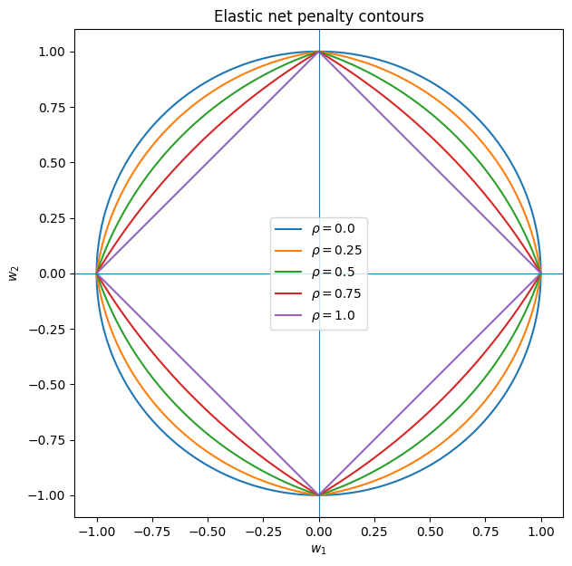
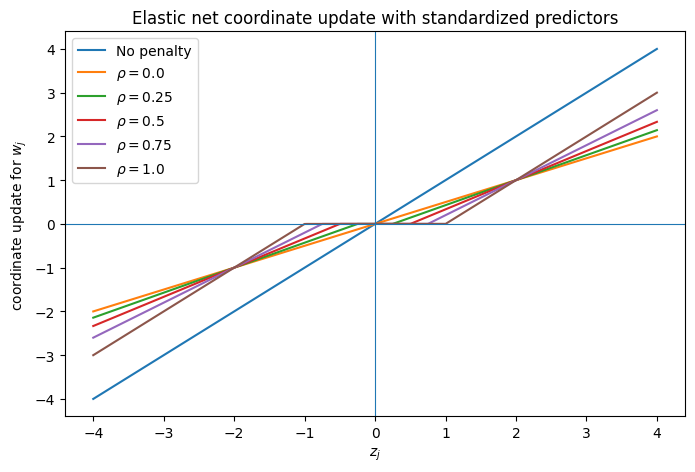
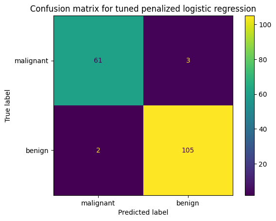
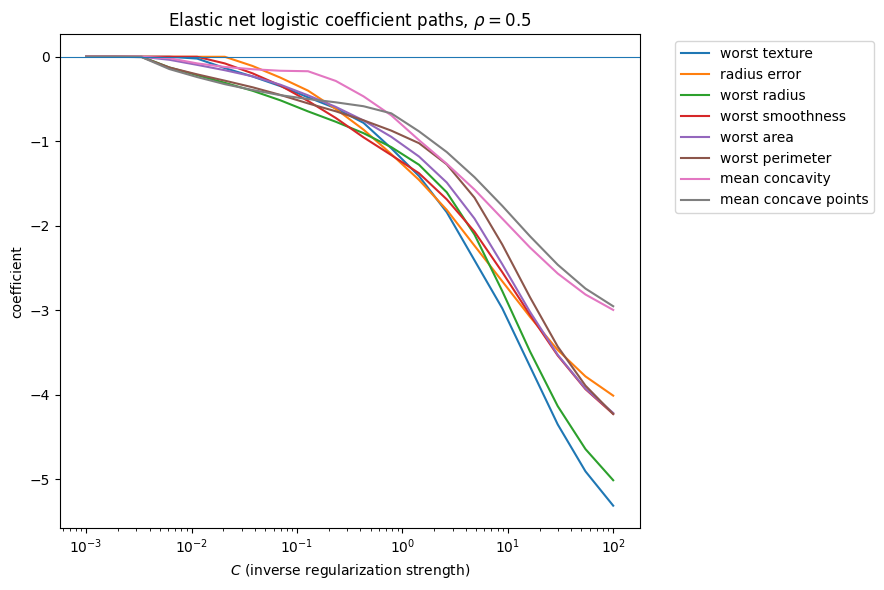
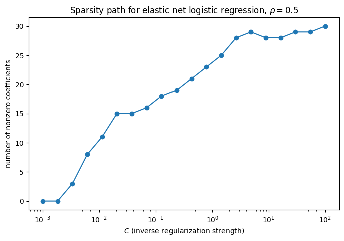

Show code
import numpy as np
import pandas as pd
import matplotlib.pyplot as pltThis lecture continues the penalized ERM sequence.
There are two goals:
The elastic net combines the ridge and LASSO penalties.
Using the common convention from sklearn, define
\[ \hat{w}^{\lambda,\rho}_{EN}= \arg\min_w \left[ \frac{1}{2N}\|y-Xw\|_2^2 + \lambda \left( \rho \|w\|_1 + \frac{1-\rho}{2}\|w\|_2^2 \right) \right]. \]
Here:
Special cases:
\[ \rho = 1 \quad \Rightarrow \quad \text{LASSO} \]
and
\[ \rho = 0 \quad \Rightarrow \quad \text{ridge} \]
up to a constant scaling of \(\lambda\).
Different books and software packages use slightly different constants in front of the squared error and the ridge term.
This does not change the main idea. A constant factor can usually be absorbed into the tuning parameter \(\lambda\).
The important point is that elastic net has two tuning parameters:
\[ \lambda \quad \text{and} \quad \rho. \]
Elastic net is useful because it keeps important features of both ridge and LASSO.
The \(\ell_1\) part:
The \(\ell_2\) part:
This makes elastic net especially useful when we want some variable selection, but the predictors have strong collinearity.
import numpy as np
import pandas as pd
import matplotlib.pyplot as pltFor two coefficients, the elastic net penalty is
\[ P_\rho(w_1,w_2)= \rho(|w_1| + |w_2|) + \frac{1-\rho}{2}(w_1^2+w_2^2). \]
The constraint form is
\[ P_\rho(w_1,w_2) \le t. \]
As \(\rho\) changes:
theta = np.linspace(0, 2*np.pi, 1000)
rhos = [0.0, 0.25, 0.5, 0.75, 1.0]
plt.figure(figsize=(7, 7))
for rho in rhos:
c = np.abs(np.cos(theta)) + np.abs(np.sin(theta))
if rho == 0:
r = np.ones_like(theta)
elif rho == 1:
r = 1 / c
else:
# Solve (1-rho) r^2 + rho*c*r = 1 for r >= 0
a = 1 - rho
b = rho * c
r = (-b + np.sqrt(b**2 + 4*a)) / (2*a)
x = r * np.cos(theta)
y = r * np.sin(theta)
plt.plot(x, y, label=rf"$\rho={rho}$")
plt.axhline(0, linewidth=0.8)
plt.axvline(0, linewidth=0.8)
plt.gca().set_aspect("equal", adjustable="box")
plt.xlabel(r"$w_1$")
plt.ylabel(r"$w_2$")
plt.title("Elastic net penalty contours")
plt.legend()
plt.show()
The corners come from the \(\ell_1\) part of the penalty.
Because the elastic net constraint still has corners on the coordinate axes, it can still produce exact zeros.
But because it also has an \(\ell_2\) part, the solution is less likely to choose only one predictor from a group of highly correlated predictors.
Elastic net can be optimized using coordinate descent, like LASSO.
Consider the objective
\[ \frac{1}{2N}\|y-Xw\|_2^2 + \lambda \left( \rho \|w\|_1 + \frac{1-\rho}{2}\|w\|_2^2 \right). \]
When updating coordinate \(j\), define the partial residual
\[ r_j= y - \sum_{k \ne j} x_k w_k. \]
Also define
\[ z_j = \frac{1}{N}x_j^\top r_j \quad \text{and} \quad a_j = \frac{1}{N}x_j^\top x_j. \]
Then one may show that the coordinate update is
\[ w_j \leftarrow \frac{S(z_j,\lambda \rho)} {a_j + \lambda(1-\rho)}, \]
where \(S\) is the soft-thresholding operator
\[ S(z,\gamma)= \operatorname{sign}(z)(|z|-\gamma)_+. \]
This formula shows how elastic net interpolates between ridge and LASSO.
If \(\rho=1\), then
\[ w_j \leftarrow \frac{S(z_j,\lambda)}{a_j}, \]
which is the LASSO update.
If \(\rho=0\), then
\[ w_j \leftarrow \frac{z_j}{a_j+\lambda}, \]
which is ridge-like shrinkage.
def soft_threshold(z, gamma):
return np.sign(z) * np.maximum(np.abs(z) - gamma, 0.0)
z = np.linspace(-4, 4, 500)
lam = 1.0
plt.figure(figsize=(8, 5))
plt.plot(z, z, label="No penalty")
for rho in [0.0, 0.25, 0.5, 0.75, 1.0]:
update = soft_threshold(z, lam * rho) / (1 + lam * (1 - rho))
plt.plot(z, update, label=rf"$\rho={rho}$")
plt.axhline(0, linewidth=0.8)
plt.axvline(0, linewidth=0.8)
plt.xlabel(r"$z_j$")
plt.ylabel(r"coordinate update for $w_j$")
plt.title("Elastic net coordinate update with standardized predictors")
plt.legend()
plt.show()
For intermediate values of \(\rho\), elastic net both thresholds and shrinks.
That is the main computational and statistical idea:
We can implement this with a very simple change to our previous coordinate descent code for LASSO:
rng = np.random.default_rng()
N = 100
D = 20
X = rng.normal(size=(N, D))
w_true = np.zeros(D)
w_true[[1, 4, 7]] = [2.5, -1.8, 1.2]
y = X @ w_true + rng.normal(scale=0.7, size=N)
# Center y and standardize X.
# This lets us fit without an intercept.
X = StandardScaler().fit_transform(X)
y = y - y.mean()def soft_threshold(c, lam):
if c > lam:
return c - lam
elif c < -lam:
return c + lam
else:
return 0.0
def en_coordinate_descent(X, y, lam, rho, max_iter=1000, tol=1e-8):
N, D = X.shape
w = np.zeros(D)
# a_j = (1/N) x_j^T x_j
a = np.sum(X ** 2, axis=0) / N
for iteration in range(max_iter):
max_change = 0.0
for j in range(D):
old_w_j = w[j]
# Current fitted values using all coordinates
y_hat = X @ w
# Partial residual:
# r_j = y - sum_{k != j} x_k w_k
#
# Since y_hat = sum_k x_k w_k,
# we remove all fitted values, then add back x_j w_j.
r_j = y - y_hat + X[:, j] * old_w_j
# c_j = (1/N) x_j^T r_j
c_j = (X[:, j] @ r_j) / N
# Coordinate update
#w_j <- S(c_j,\lambda \rho)/(a_j + \lambda(1-\rho))
# << This is basically all that needs to be changed >>
new_w_j = soft_threshold(c_j, rho*lam) / (a[j] + lam*(1-rho))
# Store update
w[j] = new_w_j
max_change = max(max_change, abs(new_w_j - old_w_j))
if max_change < tol:
break
return w, iteration + 1lam = 0.3
rho = .111
w_cd, n_iter = en_coordinate_descent(X, y, lam, rho)
print(f"Coordinate descent finished in {n_iter} iterations")
print(np.round(w_cd, 3))Coordinate descent finished in 13 iterations
[ 3.900e-02 2.063e+00 -2.900e-02 -1.400e-02 -1.542e+00 -2.000e-03
4.100e-02 6.400e-01 0.000e+00 -9.300e-02 -1.000e-03 1.400e-02
0.000e+00 1.480e-01 -2.200e-02 9.000e-02 -5.200e-02 0.000e+00
1.030e-01 2.300e-02]lasso = ElasticNet(
alpha=lam,
l1_ratio=rho,
fit_intercept=False,
max_iter=10000,
tol=1e-10
)
lasso.fit(X, y)
w_sklearn = lasso.coef_
print(np.round(w_sklearn, 3))[ 3.900e-02 2.063e+00 -2.900e-02 -1.400e-02 -1.542e+00 -2.000e-03
4.100e-02 6.400e-01 0.000e+00 -9.300e-02 -1.000e-03 1.400e-02
-0.000e+00 1.480e-01 -2.200e-02 9.000e-02 -5.200e-02 -0.000e+00
1.030e-01 2.300e-02]np.max(w_sklearn-w_cd)np.float64(4.308504317207529e-10)For binary classification, suppose
\[ y_n \in \{0,1\}. \]
We still use a linear score, but now we write the intercept separately (since we’ll not want to penalize this):
\[ s(x) = w_0 + w^\top x. \]
This score is converted into a probability using the logistic function:
\[ p(x) = \sigma(w_0 + w^\top x) = \sigma(s(x)), \]
where \(\sigma\) is the logistic function.
As before, we use the cross-entropy loss:
\[ \ell(y, s(x)) = -\Big( y \log \sigma(s(x)) + (1-y)\log(1 - \sigma(s(x))) \Big). \]
It is algebraically equivalent to:
\[ \ell(y, s(x))= \log(1 + e^{s(x)})- y\,s(x). \]
Equivalently, substituting in the linear score,
\[ \ell(y, w_0 + w^\top x)= \log(1 + e^{w_0 + w^\top x})- y(w_0 + w^\top x). \]
The unpenalized logistic regression estimator solves
\[ (\hat{w_0},\hat{w})= \arg\min_{w_0,w} \frac{1}{N} \sum_{n=1}^N \left[ \log(1+e^{w_0+x_n^\top w})- y_n(w_0+x_n^\top w) \right]. \]
The penalized logistic ERM problem is
\[ (\hat{w_0},\hat{w})= \arg\min_{w_0,w} \left[ \frac{1}{N} \sum_{n=1}^N \left\{ \log(1+e^{w_0+x_n^\top w})- y_n(w_0+x_n^\top w) \right\} + \lambda \Omega(w) \right]. \]
As before, the intercept \(w_0\) is usually not penalized.
The same penalties can be used:
Ridge logistic regression
\[ \Omega(w)=\frac{1}{2}\|w\|_2^2. \]
LASSO logistic regression
\[ \Omega(w)=\|w\|_1. \]
Elastic net logistic regression
\[ \Omega(w)= \rho\|w\|_1 + \frac{1-\rho}{2}\|w\|_2^2. \]
Lets assume an elastic-net-like penalty. Then the objective is:
\[ \min_{w_0,w} \left[ \frac{1}{N} \sum_{n=1}^N \left\{ \log(1+e^{w_0+x_n^\top w})- y_n(w_0+x_n^\top w) \right\} + \lambda \left( \rho \|w\|_1 + \frac{1-\rho}{2}\|w\|_2^2 \right) \right]. \]
The main issue is that this is no longer an ordinary least-squares problem. The logistic loss is not quadratic in \(w\), and if \(\rho > 0\), the \(\ell_1\) part of the penalty is not differentiable at zero. What a nightmare! However, a common practical approach is to combine two ideas we have already seen:
This (among others) is how we can solve the problem.
At the current value of the parameters, define
\[ s_n = w_0 + x_n^\top w \]
and
\[ p_n = \sigma(s_n). \]
Then define the weights
\[ v_n = p_n(1-p_n), \]
and the working response
\[ z_n = s_n + \frac{y_n-p_n}{v_n}. \]
Using a quadratic approximation to the logistic loss, the problem becomes approximately
\[ \min_{w_0,w} \left[ \frac{1}{2N} \sum_{n=1}^N v_n \left( z_n - w_0 - x_n^\top w \right)^2 + \lambda \left( \rho \|w\|_1 + \frac{1-\rho}{2}\|w\|_2^2 \right) \right]. \]
The quadratic approximation comes from a second-order Taylor expansion of the logistic loss around the current fitted scores.
For one observation, write
\[ s_n = w_0 + x_n^\top w \]
and
\[ \ell(y_n,s_n)= \log(1+e^{s_n}) - y_n s_n. \]
Suppose the current parameter values give the current score \(s_n^{old}\). A second-order Taylor approximation gives
\[ \ell(y_n,s_n) \approx \ell(y_n,s_n^{old}) + \ell'(y_n,s_n^{old})(s_n-s_n^{old}) + \frac{1}{2} \ell''(y_n,s_n^{old})(s_n-s_n^{old})^2. \]
For logistic regression,
\[ \ell'(y_n,s_n^{old}) = p_n-y_n \]
and
\[ \ell''(y_n,s_n^{old}) = p_n(1-p_n), \]
where
\[ p_n = \sigma(s_n^{old}). \]
Define
\[ v_n = p_n(1-p_n). \]
Then the approximation becomes
\[ \ell(y_n,s_n) \approx \ell(y_n,s_n^{old}) + (p_n-y_n)(s_n-s_n^{old}) + \frac{1}{2}v_n(s_n-s_n^{old})^2. \]
Completing the square, this is equivalent, up to terms that do not depend on the new parameters, to
\[ \frac{1}{2}v_n(z_n-s_n)^2, \]
where
\[ z_n= s_n^{old} + \frac{y_n-p_n}{v_n}. \]
Thus, the logistic loss is locally approximated by a weighted squared-error loss with response \(z_n\) and weight \(v_n\). Since \(s_n = w_0+x_n^\top w\), this gives
\[ \frac{1}{2N} \sum_{n=1}^N v_n \left( z_n-w_0-x_n^\top w \right)^2. \]
This now looks like elastic-net regression, except that each observation has a weight \(v_n\), and the response is the working response \(z_n\). Since \(z_n\) and \(v_n\) depend on the current fitted probabilities, they are updated repeatedly.
For the coordinate descent step, we update one coefficient at a time. When updating coordinate \(j\), define the partial residual
\[ r_n^{(j)}= z_n - w_0 - \sum_{k \neq j} x_{nk}w_k. \]
Then define
\[ c_j= \frac{1}{N} \sum_{n=1}^N v_n x_{nj} r_n^{(j)} \]
and
\[ a_j= \frac{1}{N} \sum_{n=1}^N v_n x_{nj}^2. \]
(These are like weighted-versions of the previous similar quantities.)
The elastic-net coordinate update is
\[ w_j \leftarrow \frac{ S(c_j,\lambda \rho) }{ a_j + \lambda(1-\rho) }, \]
where
\[ S(c,\gamma)= \operatorname{sign}(c)(|c|-\gamma)_+ \]
is the soft-thresholding operator. This is just like the previous elastic net steps.
The intercept update is just the weighted least-squares intercept update:
\[ w_0 \leftarrow \frac{ \sum_{n=1}^N v_n(z_n - x_n^\top w) }{ \sum_{n=1}^N v_n }. \]
So the full algorithm is:
import numpy as np
def sigmoid(s):
out = 1 / (1 + np.exp(-s))
return out
def soft_threshold(c, lam):
if c > lam:
return c - lam
elif c < -lam:
return c + lam
else:
return 0.0
def logistic_en_coordinate_descent(
X,
y,
lam,
rho,
max_outer=100,
max_inner=1000,
tol=1e-8,
):
N, D = X.shape
# Initialize coefficients
w = np.zeros(D)
# Initialize intercept to the empirical log-odds
y_bar = np.mean(y)
w0 = np.log(y_bar / (1 - y_bar))
for outer in range(max_outer):
old_w0 = w0
old_w = w.copy()
# Current scores and probabilities
s = w0 + X @ w
p = sigmoid(s)
# Quadratic approximation weights
v = p * (1 - p)
# Working response
z = s + (y - p) / v
# Now solve the penalized weighted least-squares problem
# using coordinate descent.
for inner in range(max_inner):
max_change = 0.0
# Update intercept separately, without penalty
old_w0_inner = w0
w0 = np.sum(v * (z - X @ w)) / np.sum(v)
max_change = max(max_change, abs(w0 - old_w0_inner))
for j in range(D):
old_w_j = w[j]
# Current fitted values for the working least-squares problem
z_hat = w0 + X @ w
# Partial residual:
# r_j = z - w0 - sum_{k != j} x_k w_k
r_j = z - z_hat + X[:, j] * old_w_j
# Weighted coordinate quantities
c_j = np.sum(v * X[:, j] * r_j) / N
a_j = np.sum(v * X[:, j] ** 2) / N
# Elastic-net coordinate update
new_w_j = soft_threshold(c_j, lam * rho) / (
a_j + lam * (1 - rho)
)
w[j] = new_w_j
max_change = max(max_change, abs(new_w_j - old_w_j))
if max_change < tol:
break
# Check convergence of the outer logistic approximation loop
outer_change = max(
abs(w0 - old_w0),
np.max(np.abs(w - old_w))
)
if outer_change < tol:
break
return w0, w, outer + 1Let’s try it on some simulated data:
np.random.seed()
N = 500
D = 6
X = np.random.normal(size=(N, D))
true_w0 = -0.5
true_w = np.array([2.0, -1.5, 0.0, 0.0, 1.0, 0.0])
s = true_w0 + X @ true_w
p = sigmoid(s)
y = np.random.binomial(1, p)
# Standardize features before applying penalties
scaler = StandardScaler()
X_scaled = scaler.fit_transform(X)lam = 0.02
rho = 0.355
w0_hat, w_hat, n_iter = logistic_en_coordinate_descent(
X_scaled,
y,
lam=lam,
rho=rho,
max_outer=100,
max_inner=1000,
tol=1e-8
)
print("Our fit")
print("intercept:", w0_hat)
print("weights: ", np.round(w_hat, 4))
print("outer iterations:", n_iter)Our fit
intercept: -0.3427278876108821
weights: [ 1.6798 -1.1124 0.1117 -0.042 0.7566 0.0234]
outer iterations: 6Now we can try with sklearn:
# sklearn uses C as inverse regularization strength.
# For our objective scaling, use C = 1 / (N * lam).
from sklearn.linear_model import LogisticRegression
C = 1 / (N * lam)
sk_model = LogisticRegression(
#penalty="elasticnet",
solver="saga",
l1_ratio=rho,
C=C,
fit_intercept=True,
max_iter=10000,
tol=1e-8,
random_state=32029
)
sk_model.fit(X_scaled, y)
sk_w0 = sk_model.intercept_[0]
sk_w = sk_model.coef_[0]
print("\nsklearn fit")
print("intercept:", sk_w0)
print("weights: ", np.round(sk_w, 4))
sklearn fit
intercept: -0.34272788920619734
weights: [ 1.6798 -1.1124 0.1117 -0.042 0.7566 0.0234]print("\nDifferences")
print("intercept difference:", w0_hat - sk_w0)
print("weight differences: ", np.round(w_hat - sk_w, 10))
Differences
intercept difference: 1.5953152687764316e-09
weight differences: [-4.5e-09 9.0e-10 -1.5e-09 -1.9e-09 -1.2e-09 -2.0e-10]Not bad!
Software convention: \(C\) and l1_ratio
In sklearns LogisticRegression, the tuning parameter is called C.
It is the inverse of regularization strength:
\[ C \propto \frac{1}{\lambda}. \]
Thus:
C means strong regularizationC means weak regularizationFor the penalty mix we set l1_ratio:
l1_ratio = 0 gives ridge logistic regressionl1_ratio = 1 gives LASSO logistic regressionWe use the breast cancer classification data from sklearn.
The response is binary:
The goal is to estimate class probabilities and classify tumors using standardized features.
from sklearn.datasets import load_breast_cancer
from sklearn.linear_model import LogisticRegression
from sklearn.metrics import (
log_loss,
accuracy_score,
roc_auc_score,
ConfusionMatrixDisplay
)
from sklearn.model_selection import StratifiedKFold
#from sklearn.exceptions import ConvergenceWarning
import sklearn
#import warnings
#warnings.filterwarnings("ignore", category=ConvergenceWarning)def sklearn_at_least_18():
major_minor = sklearn.__version__.split(".")[:2]
try:
major, minor = int(major_minor[0]), int(major_minor[1])
return (major, minor) >= (1, 8)
except Exception:
return False
def make_logistic(C=1.0, l1_ratio=0.0, random_state=10):
kwargs = {
"solver": "saga",
"C": C,
"l1_ratio": l1_ratio,
"max_iter": 5000,
"tol": 1e-3,
"random_state": random_state
}
# sklearn 1.8 and later uses l1_ratio directly.
# Older versions need penalty="elasticnet" for l1_ratio to control the mix.
if sklearn_at_least_18():
return LogisticRegression(**kwargs)
else:
return LogisticRegression(penalty="elasticnet", **kwargs)data = load_breast_cancer()
X = data.data
y = data.target
feature_names = np.array(data.feature_names)
target_names = data.target_names
print("X shape:", X.shape)
print("y shape:", y.shape)
print("target names:", target_names)X shape: (569, 30)
y shape: (569,)
target names: ['malignant' 'benign']X_train, X_test, y_train, y_test = train_test_split(
X, y,
test_size=0.3,
random_state=10,
stratify=y
)
Cs = np.logspace(-3, 1.5, 6)
l1_ratios = [0.0, 0.5, 1.0]
logistic_pipeline = make_pipeline(
StandardScaler(),
LogisticRegression(
solver="saga",
max_iter=5000,
tol=1e-3
)
)
param_grid = {
"logisticregression__C": Cs,
"logisticregression__l1_ratio": l1_ratios
}inner_cv = StratifiedKFold(n_splits=4, shuffle=True, random_state=3)
search = GridSearchCV(
estimator=logistic_pipeline,
param_grid=param_grid,
scoring="neg_log_loss",
cv=inner_cv,
refit=True
)
search.fit(X_train, y_train)
print("Best parameters:")
print(search.best_params_)Best parameters:
{'logisticregression__C': np.float64(0.5011872336272725), 'logisticregression__l1_ratio': 0.0}best_logistic_model = search.best_estimator_
prob_test = best_logistic_model.predict_proba(X_test)[:, 1]
pred_test = best_logistic_model.predict(X_test)
test_log_loss = log_loss(y_test, prob_test)
test_accuracy = accuracy_score(y_test, pred_test)
print(f"Test log loss: {test_log_loss:.4f}")
print(f"Test accuracy: {test_accuracy:.4f}")Test log loss: 0.0929
Test accuracy: 0.9708ConfusionMatrixDisplay.from_estimator(
best_logistic_model,
X_test,
y_test,
display_labels=target_names
)
plt.title("Confusion matrix for tuned penalized logistic regression")
plt.show()
The selected model is the one with the best cross-validated log loss on the training data.
The final evaluation on the test set should be done only once, after tuning is complete.
X.shape(569, 30)logistic_step = best_logistic_model.named_steps["logisticregression"]
coef = logistic_step.coef_.ravel()
coef_table = (
pd.DataFrame({
"feature": feature_names,
"coef": coef,
"abs_coef": np.abs(coef),
"selected": np.abs(coef) > 1e-8
})
.sort_values("abs_coef", ascending=False)
.reset_index(drop=True)
)
print("Number of nonzero coefficients:", int(np.sum(np.abs(coef) > 1e-8)))
coef_table.head(15)Number of nonzero coefficients: 30| feature | coef | abs_coef | selected | |
|---|---|---|---|---|
| 0 | worst texture | -0.862795 | 0.862795 | True |
| 1 | radius error | -0.812571 | 0.812571 | True |
| 2 | worst radius | -0.804229 | 0.804229 | True |
| 3 | worst smoothness | -0.798756 | 0.798756 | True |
| 4 | worst area | -0.760291 | 0.760291 | True |
| 5 | worst perimeter | -0.728498 | 0.728498 | True |
| 6 | mean concavity | -0.635507 | 0.635507 | True |
| 7 | mean concave points | -0.633514 | 0.633514 | True |
| 8 | area error | -0.625153 | 0.625153 | True |
| 9 | mean area | -0.622022 | 0.622022 | True |
| 10 | worst concavity | -0.618532 | 0.618532 | True |
| 11 | mean texture | -0.611981 | 0.611981 | True |
| 12 | mean radius | -0.608142 | 0.608142 | True |
| 13 | worst symmetry | -0.606322 | 0.606322 | True |
| 14 | perimeter error | -0.597005 | 0.597005 | True |
As in ridge and LASSO, it is useful to look at coefficient paths.
Here C is on the horizontal axis. Remember:
\[ C \uparrow \quad \Longleftrightarrow \quad \lambda \downarrow. \]
So coefficients usually become larger as C increases.
path_Cs = np.logspace(-3, 2, 20)
path_l1_ratio = 0.5
coefs = []
nonzero_counts = []
for C in path_Cs:
model = make_pipeline(
StandardScaler(),
LogisticRegression(C=C, l1_ratio=path_l1_ratio, solver='saga', max_iter=5000, random_state=3433)
)
model.fit(X_train, y_train)
c = model.named_steps["logisticregression"].coef_.ravel()
coefs.append(c)
nonzero_counts.append(np.sum(np.abs(c) > 1e-8))
coefs = np.array(coefs)
nonzero_counts = np.array(nonzero_counts)
top_features = np.argsort(np.abs(coef))[-8:][::-1]plt.figure(figsize=(9, 6))
for j in top_features:
plt.plot(path_Cs, coefs[:, j], label=feature_names[j])
plt.axhline(0, linewidth=0.8)
plt.xscale("log")
plt.xlabel(r"$C$ (inverse regularization strength)")
plt.ylabel("coefficient")
plt.title(r"Elastic net logistic coefficient paths, $\rho=0.5$")
plt.legend(bbox_to_anchor=(1.05, 1), loc="upper left")
plt.tight_layout()
plt.show()
plt.figure(figsize=(8, 5))
plt.plot(path_Cs, nonzero_counts, marker="o")
plt.xscale("log")
plt.xlabel(r"$C$ (inverse regularization strength)")
plt.ylabel("number of nonzero coefficients")
plt.title(r"Sparsity path for elastic net logistic regression, $\rho=0.5$")
plt.show()
As C gets larger, regularization weakens. More coefficients can enter the model.
As C gets smaller, regularization strengthens. The elastic net penalty shrinks coefficients and can set some to zero.